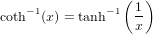

ACOTH Inverse Hyperbolic Cotangent Function
Section: Mathematical Functions
Usage
Computes the inverse hyperbolic cotangent of its argument. The general
syntax for its use is
y = acoth(x)
where x is an n-dimensional array of numerical type.
Function Internals
The acoth function is computed from the formula

Examples
Here is a simple plot of the inverse hyperbolic cotangent function
--> x = linspace(1,pi);
--> plot(x,acoth(x)); grid('on');